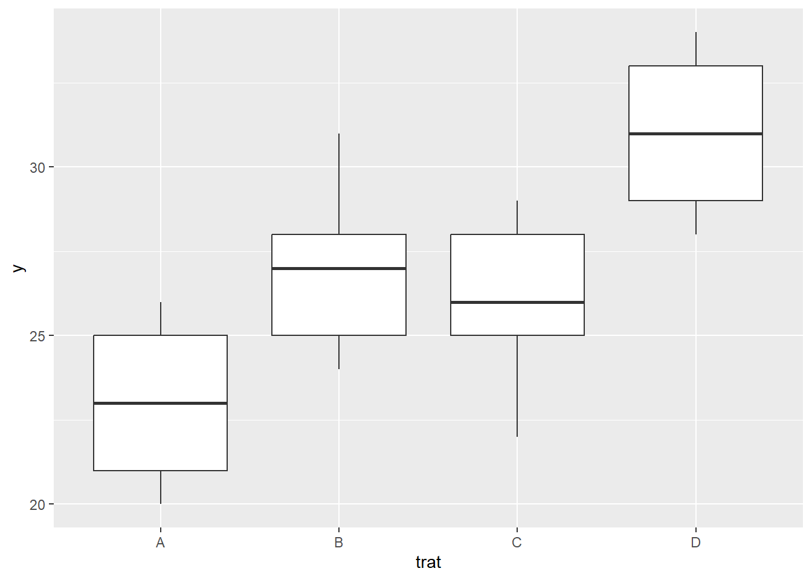

Capítulo 4 Delineamento inteiramente casualizado
O delineamento inteiramente casualizado (DIC) é o mais simples dos delineamentos, pois considera apenas dois dos princípios básicos da experimentação: a repetição e a casualização. Neste, os tratamentos são aleatoriamente atribuídos ao material experimental, sem o esforço de se restringir os tratamentos a alguma porção de área, material ou espaço. Ainda como característica, como não há uso do controle local o número de repetições por tratamento pode variar.É geralmente utilizado quando a variação do material experimental é relativamente pequena, o que geralmente ocorre em laboratórios e casas de vegetação. Como vantagens de sua utilização temos que é um experimento de fácil planejamento e que permite o número máximo de graus de liberdade do Resíduo. Em termos de análise é a mais simples quando comparado aos demais delineamentos experimentais e não apresentará confundimento caso os tratamentos tenham números diferentes de repetições. Entretanto, como desvantagens temos que o delineamento inteiramente casualizado é adequado aos experimentos com baixo número de tratamentos e material experimental homogêneo, o que nem sempre se consegue. Quando um grande número de tratamentos é utilizado, há um crescimento no material experimental, que pode inflacionar a variação experimental. Nesses casos o Delineamento Inteiramente Casualizado não é indicado.
Obtendo um croqui para um DIC
Para obtermos um croqui para um experimento com I tratamentos em um DIC, sendo o iésimo tratamento repetido ni vezes e o número total de parcelas \(n=\sum_{i=1}^I n_i\)
Exemplo
Suponha que desejamos comparar a produtividade de três variedades de soja, com três, quatro e três repetições respectivamente. O plano de casualização para o delineamento sistemático é dado por:
4.1 Aplicação no R studio
Planejamento e Croqui
> #' # Planejamento de um experimento
> set.seed(1234)
> sample(rep(c("A", "B", "C", "D"), 5)) [1] "D" "A" "D" "C" "A" "C" "B" "D" "B" "C" "B" "B" "C" "D" "A" "D" "A" "A" "B"
[20] "C"> #' ## Usando a biblioteca agricolae
>
> # Instalando
> # install.packages("agricolae",
> # dependencies = TRUE)
> # Habilitando as funções
> library(agricolae)
> trt = LETTERS[1:4]
> delineamento <- design.crd(trt,
+ r = 5,
+ serie = 0)
> delineamento$parameters
$parameters$design
[1] "crd"
$parameters$trt
[1] "A" "B" "C" "D"
$parameters$r
[1] 5 5 5 5
$parameters$serie
[1] 0
$parameters$seed
[1] 1407173775
$parameters$kinds
[1] "Super-Duper"
$parameters[[7]]
[1] TRUE
$book
plots r trt
1 1 1 C
2 2 1 B
3 3 1 D
4 4 2 D
5 5 2 B
6 6 2 C
7 7 3 B
8 8 3 D
9 9 4 B
10 10 4 D
11 11 5 B
12 12 1 A
13 13 2 A
14 14 3 C
15 15 3 A
16 16 4 A
17 17 5 D
18 18 4 C
19 19 5 A
20 20 5 C> # Graficamente
>
> # install.packages("agricolaeplotr",
> # dependencies = TRUE)
> library(agricolaeplotr)The legacy packages maptools, rgdal, and rgeos, underpinning the sp package,
which was just loaded, will retire in October 2023.
Please refer to R-spatial evolution reports for details, especially
https://r-spatial.org/r/2023/05/15/evolution4.html.
It may be desirable to make the sf package available;
package maintainers should consider adding sf to Suggests:.
The sp package is now running under evolution status 2
(status 2 uses the sf package in place of rgdal)
Attaching package: 'agricolaeplotr'The following object is masked from 'package:base':
summary> plot_design_crd(delineamento,
+ ncols = 4,
+ nrows = 5)> # Para montar um croqui precisamos de um gride, definido por linhas e colunas
> delineamento$book$Linha <- rep(1:5, each = 4)
> delineamento$book$Coluna <- rep(1:4, times = 5)
>
> delineamento$book plots r trt Linha Coluna
1 1 1 C 1 1
2 2 1 B 1 2
3 3 1 D 1 3
4 4 2 D 1 4
5 5 2 B 2 1
6 6 2 C 2 2
7 7 3 B 2 3
8 8 3 D 2 4
9 9 4 B 3 1
10 10 4 D 3 2
11 11 5 B 3 3
12 12 1 A 3 4
13 13 2 A 4 1
14 14 3 C 4 2
15 15 3 A 4 3
16 16 4 A 4 4
17 17 5 D 5 1
18 18 4 C 5 2
19 19 5 A 5 3
20 20 5 C 5 4Importando dados de excel .xlsx
> #Deve-se importar os arquivos .xlsx para o Rstudio
> library(readxl)
> dados1 <- read_xlsx("dados/aula2.2.xlsx")
>
> knitr::kable(dados1)| trat | y |
|---|---|
| A | 25 |
| A | 26 |
| A | 20 |
| A | 23 |
| A | 21 |
| B | 31 |
| B | 25 |
| B | 28 |
| B | 27 |
| B | 24 |
| C | 22 |
| C | 26 |
| C | 28 |
| C | 25 |
| C | 29 |
| D | 33 |
| D | 29 |
| D | 31 |
| D | 34 |
| D | 28 |
Análise descritiva dos dados
> library(ggplot2)
> ggplot(dados1,
+ aes(x = trat,
+ y = y)) +
+ geom_point() +
+ geom_point(stat = "summary",
+ fun = mean,
+ col = "red") +
+ annotate("point",
+ x = dados1$trat,
+ y = 26.75,
+ colour = "blue") +
+ xlab("tratamentos") +
+ ylab("produtividade")
> ggplot(dados1,
+ aes(x = trat,
+ y = y)) +
+ geom_boxplot()
> #' ## Estatísticas descritivas
> n <- with(dados1, tapply(y,trat, length))
> soma <- with(dados1, tapply(y,trat,sum))
> media <- with(dados1, tapply(y,trat,mean))
> variancia <- with(dados1, tapply(y,trat,var))
> desv.padr <- with(dados1, tapply(y,trat,sd))
> dist.int <- with(dados1, tapply(y,trat,IQR))> #' Criando uma função que calcula a amplitude
> f1 <- function(x) max(x)-min(x)
> amplitude <- with(dados1, tapply(y,trat,f1))
>
> resumo <- rbind(n, soma, media, variancia,
+ desv.padr, amplitude,dist.int)
> rownames(resumo) <- c("n", "Soma", "Média",
+ "Variância", "Desvio-padrão",
+ "Amplitude", "Amplitude Interquartílica")
> round(resumo,3) A B C D
n 5.00 5.000 5.000 5.00
Soma 115.00 135.000 130.000 155.00
Média 23.00 27.000 26.000 31.00
Variância 6.50 7.500 7.500 6.50
Desvio-padrão 2.55 2.739 2.739 2.55
Amplitude 6.00 7.000 7.000 6.00
Amplitude Interquartílica 4.00 3.000 3.000 4.00Análise da variância (ANOVA)
> #' ## Análise de variância
> #'
> #' $H_0$: $\mu_1 = \mu_2 = \mu_3 = \mu_4$ *versus*
> #' $H_1:$ Pelo menos duas médias de tratamentos diferem entre si.
> #'
> modelo <- aov(y ~ trat, dados1)
> anova(modelo)Analysis of Variance Table
Response: y
Df Sum Sq Mean Sq F value Pr(>F)
trat 3 163.75 54.583 7.7976 0.001976 **
Residuals 16 112.00 7.000
---
Signif. codes: 0 '***' 0.001 '**' 0.01 '*' 0.05 '.' 0.1 ' ' 1